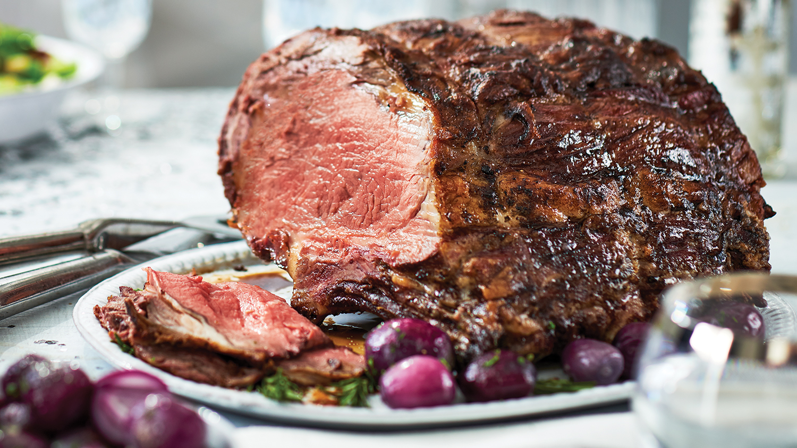

Salt-Encrusted Prime Rib

Restaurants have nothing on this salt-crusted prime rib recipe. For a true meat lover, it's very easy and the results are beyond belief. —Roger Bowlds, Bakersfield, California
Ingredients
- 1 box (3 pounds) kosher salt (about 6 cups), divided
- 1 bone-in beef rib roast (6 to 8 pounds)
- 3 tablespoons Worcestershire sauce
- 2 tablespoons cracked black pepper
- 2 teaspoons garlic powder
- 1/2 cup water
Steps
- Preheat oven to 450°. Line a shallow roasting pan with heavy-duty foil. Place 3 cups salt on foil, spreading evenly to form a 1/2-in. layer.
- Brush roast with Worcestershire sauce; sprinkle with pepper and garlic powder. Place roast on layer of salt, fat side up. In a small bowl, mix water and remaining salt (mixture should be just moist enough to pack). Beginning at the base of the roast, press salt mixture onto the sides and top of roast.
- Roast 15 minutes. Reduce oven setting to 325°. Roast 2 to 2-1/4 hours or until a thermometer reaches 130° for medium-rare; 145° for medium. (Temperature of roast will continue to rise about 15° upon standing.) Let stand 20 minutes.
- Remove and discard salt crust; brush away any remaining salt. Carve roast into slices.